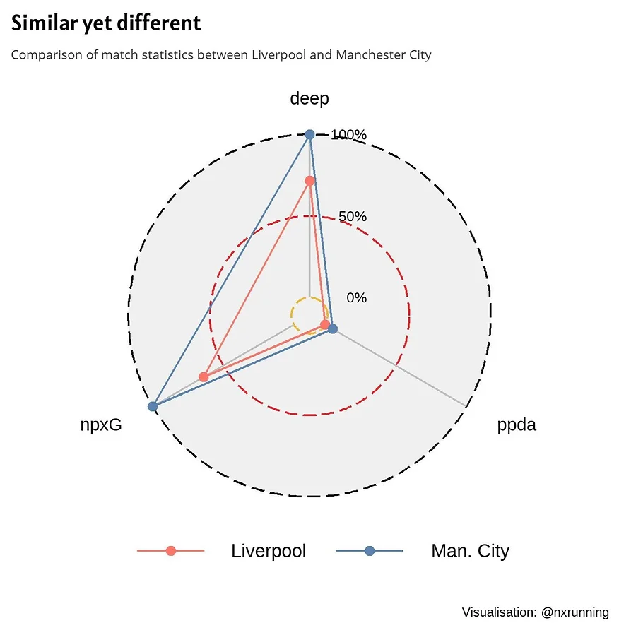
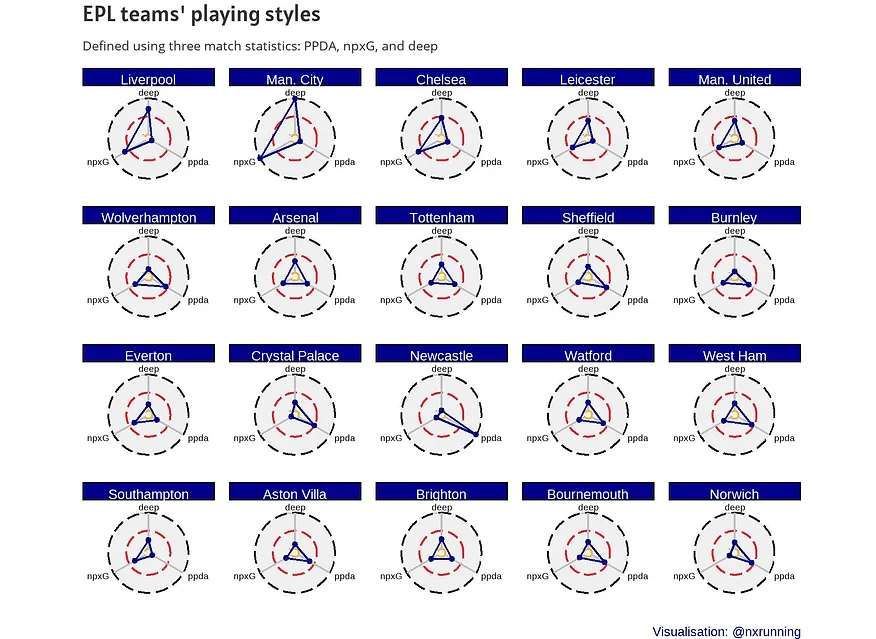

Playing styles typically differed among football teams. A team’s playing style is often based on a myriad of factors including manager’s football philosophy, tactical strategies, players’ attributes etc. This blog post visualises the playing styles of English Premier League (EPL) football teams with the use of radar charts.
Characterising Playing Styles
While it is common to hear that certain teams are either predominantly attacking or defensively minded, such descriptions often sound quite vague. Thanks to Understat, we can use data to try characterising playing styles of football teams in a more objective manner. The understatr package provides match statistics on several major European football leagues from previous seasons, saving us the trouble from performing web scrapping ourselves. In this blog post, three key statistics were used to characterise the match plays of football teams in EPL season 19/20: passes allowed per defensive action (PPDA), deep, and expected goals (xG).
First, PPDA is a measure of a team’s high press intensity and it is calculated using the number of passes made by the attacking team divided by the number of defensive actions (e.g. tackle, interception, challenge, foul). A high pressing team will be expected to have lower PPDA values since pressing strategies will result in greater number of defensive actions and diminish the likelihood of the opposition team stringing many passes successfully. Hence, low PPDA values indicate high intensity of pressing and vice versa.
Second, deep refers to the number of passes completed within an estimated 20 yards of goal, excluding crosses. This gives us insights on a team’s behaviour in the final third of the opposition team.
Last, xG provides information on the goal-scoring opportunities of a team. It represents the accumulative probability of shots being scored in a match. I have used this metric to examine Liverpool’s title-winning success in my previous blog post. In this blog post, the non-penalty expected goals (npxG) metric was used instead to specifically account for goal-scoring opportunities exclusive of penalties, which tend to have high xG values.
Radar Chart Visualisation
Radar charts are useful to visualise multivariate data in a two-dimensional manner. This is also a popular way in displaying football data. Statsbomb, a football analytics company, commonly uses such visualisation to show and compare individual players’ statistics. While there are different packages capable of creating radar charts, this blog post utilised the ggradar package to visualise the three aforementioned statistics.

The figure above is an example of a radar chart, which displays the three statistics for two different teams. All three variables were first standardised and rescaled to a range between 0 and 1 with reference to all the teams in the league. This is to ensure that different variables of differing scales could be mapped onto the same “axes”. As seen in the figure, the chart has three circular gridlines of different sizes and colours. These gridlines represent the common axes shared by all variables and correspond to the rescaled range in percentages. The most inner gridline, in yellow, corresponds to 0%. The middle gridline (in red) corresponds to 50% and the most outer gridline (in black) corresponds to 100%. Low scores on any of the variables are close to the yellow gridline and high scores are more proximal to the black gridline instead.
Radar charts are useful in helping us to make comparisons quickly. The radar chart above compares the match statistics between Liverpool FC and Newcastle United. The playing style of each team is defined in a triangular shape since we have three variables. With a glance of the chart, the contrast between the two triangles suggests that the playing styles differed between the two teams.
The radar chart shows that Liverpool scored above 50% for both npxG and deep statistics, and 0% for PPDA. Conversely, Newcastle scored very low on npxG and deep, but attained 100% for PPDA. Despite using only three variables, these statistics reveal insights on the differing styles between teams. Liverpool is a team that created relatively high number of goal scoring opportunities, and also made several passes in the opposition team’s final third. The 0% for PPDA indicates that they possessed the greatest intensity of high-pressing in the league. On the other hand, Newcastle is on the other end of the spectrum. 100% for PPDA suggests that they pressed relatively less than all the other teams in the league. In addition, they also made the least number of passes near the opposition’s goal. Unsurprisingly, their goal scoring opportunities were on the lower end (5.8%).

Next, let’s compare between Liverpool and Manchester City. Contrary to the previous comparison, this radar chart clearly informs us that these two teams are very alike, as evidenced by the two almost similar triangles. Regular audience of the EPL would know that both teams like to be dominant in possession and play exciting attacking football. While they are similar, the runner-ups were superior in creating goal-scoring opportunities and passes in the opponent’s final third as compared to the champions. In fact, they were the best in both statistics across the entire league. On the other hand, Liverpool edged out their rivals in terms of high press intensity.

Finally, the last figure presents the radar charts for every single team in the EPL, based on season 19/20 data. The teams are arranged in the order as the final table rankings. Interestingly, worst performing teams in terms of npxG (Crystal Palace), deep and PPDA (Newcastle) were not at the bottom of the league table. This suggests that these three indices are probably not the best predictors of overall football performance. Obviously, it would be somewhat too simplistic to characterise a team’s playing style merely on these three statistics. Nevertheless, they do provide us with some insights on different teams’ playing styles, and radar chart is a good approach to visualise these metrics and make comparisons with ease.
You may access the full code for all data processing and visualisation at my github.